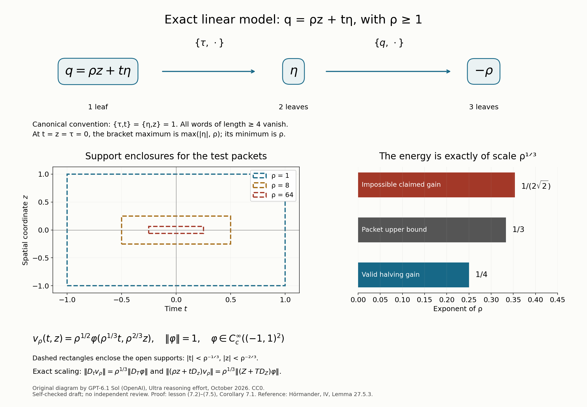

A parameter gain from polynomial commutators
A large multiplication term can sometimes be removed by a phase. What remains must then be measured by the commutators of the two operators. For polynomial coefficients, the full derivative jet makes this measurement uniform throughout a fixed rectangle, even where the coefficient of the spatial derivative vanishes.
This lesson proves a power gain in a large parameter. We first turn the polynomial jet into two exact operator identities. We then prove the energy estimate with a parameter Sobolev norm. Its only operator estimates are Fourier multiplier estimates proved here. This avoids allowing an unrecorded dependence on the large parameter in an ordinary Sobolev bound.
The algebraic prerequisite is Polynomial brackets and the residual jet, Theorem 1.1 and Sections 2–5. The energy argument develops the commutator method of Kohn and of Oleĭnik and Radkevič, used in Brackets and general hypoellipticity, Lemma 4.2. We also use Plancherel's identity, Young's convolution inequality and elementary polynomial Taylor formulas. Basic references for commutator methods are Bramanti [B] and Hörmander [H]. The proof below supplies all the additional parameter estimates.
1. The gain and the phase
Write \(D_t=-i\partial_t,D_z=-i\partial_z\), and use the canonical convention \(\{\tau,t\}=\{\eta,z\}=1\). Fix positive integers \(n\leq M\). Give \(t,z\) weights \(1,n\). Let \(F(t,z),G(t)\) be real polynomials with
\[ \deg_{\mathrm{wt}}F<M,\qquad \deg G<n. \tag{1.1} \]For a fixed \(C_0\geq1\), assume
\[ \max_j|G^{(j)}(0)|\leq C_0,\qquad \max_j|G^{(j)}(0)|\geq C_0^{-1}. \tag{1.2} \]There is no bound on the coefficients of \(F\). Set \(L_1=\tau,L_2=F+G\eta\). Define left-nested words by \(L_{(a)}=L_a,L_{(a,I)}=\{L_a,L_I\}\). Their length \(|I|\) counts leaves. Put
\[ \begin{gathered} \mathcal B(t,z,\eta) =\max_{1\leq|I|\leq M}|L_I(t,z,0,\eta)|,\\ \rho=\min_{\eta\in\mathbb R}\mathcal B(0,0,\eta), \qquad \varepsilon=2^{1-M},\\ Q=\{(t,z):|t|<1,\ |z|<1\}. \end{gathered} \tag{1.3} \]Words longer than \(M\) vanish by the algebraic prerequisite. The minimum in (1.3) exists, as we will also check below.
Theorem 1.1 (uniform polynomial parameter gain). There are \(C,\rho_0\), depending only on \(M,n,C_0\), such that, if \(\rho\geq\rho_0\), then every \(u\in C_c^\infty(Q)\) satisfies
\[ \rho^\varepsilon\|u\| \leq C\bigl(\|D_tu\|+ \|(F+GD_z)u\|\bigr). \tag{1.4} \]All norms without a subscript are on \(L^2(\mathbb R^2)\). In particular, the constant is independent of the unbounded coefficients of \(F\).
Here is the stronger norm estimate used in the proof. Choose an index \(s<n\) with \(|G^{(s)}(0)|\geq C_0^{-1}\), and set
\[ \begin{gathered} H(z)=F^{(s)}(0,z)/G^{(s)}(0),\\ R=F-GH,\qquad \Phi(z)=\int_0^zH(y)\,dy,\\ \Lambda_\rho=(\rho^2+D_z^2)^{1/2},\qquad \|v\|_{a,\rho}=\|\Lambda_\rho^a v\|. \end{gathered} \tag{1.5} \]For \(\rho\geq1\) one has
\[ \begin{gathered} \|e^{i\Phi}u\|_{\varepsilon,\rho}\\ \leq C\bigl(\|D_tu\|+ \|(F+GD_z)u\|+\|u\|\bigr). \end{gathered} \tag{1.6} \]The Sobolev norm in (1.6) is taken after the phase change. A large \(H\) need not act boundedly on the original Sobolev norm with a constant independent of \(F\). The phase is unitary on \(L^2\), which is all that (1.4) requires.
The integer weights in this theorem have a mathematical role. Section 7 gives a complete replacement for real weights and an explicit test showing why the exponent cannot simply be extended to every real value of \(M\).
2. The full jet gives uniformly bounded coefficients
Put
\[ E=G F_t-FG'=G R_t-RG',\qquad \mathcal J(P)=\sum_\alpha|\partial_{t,z}^\alpha P|. \tag{2.1} \]The sums are finite polynomial jets. The prerequisite theorem gives, on every fixed bounded rectangle,
\[ \begin{gathered} \mathcal B(t,z,\eta) \asymp |\eta+H(z)|+\mathcal J(E)(t,z),\\ \mathcal J(R)(t,z)\asymp\mathcal J(E)(t,z). \end{gathered} \tag{2.2} \]The constants depend only on the degree bounds, \(C_0\) and the rectangle. In the first comparison the original and shifted word families agree under the canonical change \(\eta_* =\eta+H(z)\).
At the origin the bracket maximum is a continuous function of \(\eta\). Its lower bound in (2.2) tends to infinity as \(|\eta|\to\infty\); therefore its minimum is attained. Taking that minimum, and taking \(\eta=-H(0)\) for the opposite bound, gives
\[ \rho\asymp\mathcal J(E)(0,0). \tag{2.3} \]Polynomial Taylor translation in both directions gives \(\mathcal J(E)(t,z)\asymp\mathcal J(E)(0,0)\) on \(|t|,|z|\leq2\). For example, each derivative at \((t,z)\) is a finite sum of derivatives at zero times \(t^a z^b/(a!b!)\); translating by \((-t,-z)\) gives the reverse inequality. Consequently, on that rectangle,
\[ c\rho\leq\mathcal J(E)\leq C\rho, \qquad \mathcal J(R)\leq C\rho. \tag{2.4} \]The derivatives of \(R\) at zero are its coefficients times factorials. Thus every coefficient of \(R/\rho\) is bounded. Every derivative of \(R/\rho\), \(E/\rho\) and \(G\), of any fixed order, is uniformly bounded on the rectangle. This supplies the coefficient bounds for the analysis.
The phase change is exact. If \(u=e^{-i\Phi}v\), then
\[ \begin{gathered} D_tu=e^{-i\Phi}D_tv,\\ (F+GD_z)u=e^{-i\Phi}(R+GD_z)v. \end{gathered} \tag{2.5} \]The support and \(L^2\) norm are preserved. Nilpotence was proved in the original coordinates and is transferred by the canonical change. The shifted polynomial \(R\) can have a larger weighted degree; we do not apply (1.1) anew to it.
3. Two exact identities on the rectangle
We next show that multiplication by \(\rho\), and then \(D_z\), are bounded-coefficient combinations of the word operators. This is stronger than a pointwise lower bound on their symbols.
Choose fixed real cutoffs \(\gamma(t),\chi(z)\), equal to one on a neighborhood of \([-1,1]\), with support in \((-2,2)\). Define
\[ \begin{gathered} S(a)=aD_z-\frac{i}{2}a_z,\\ P_1=D_t,\qquad P_2=S(\gamma\chi G)+\gamma\chi R,\\ P_{(a)}=P_a,\qquad P_{(a,I)}=i[P_a,P_I]. \end{gathered} \tag{3.1} \]For real \(a\), \(S(a)\) is symmetric on Schwartz functions. All the \(P_I\) are symmetric there. On \(Q\), \(P_2=R+GD_z\). The correction \(-ia_z/2\) is globally bounded independently of \(\rho\), and is zero on \(Q\).
For any two real coefficient pairs, direct differentiation gives
\[ \begin{gathered} i[S(a)+\rho b,S(c)+\rho d]\\ =S(ac_z-ca_z)+\rho(ad_z-cb_z),\\ i[D_t,S(a)+\rho b] =S(a_t)+\rho b_t. \end{gathered} \tag{3.2} \]These are exactly the Weyl quantizations of the corresponding Poisson brackets. They also show why an intercept of size \(\rho\) produces no term of size \(\rho^2\): multiplication operators commute. Induction proves that every word except the single leaf \(P_1\) has the form \(S(a_I)+\rho b_I\), with \(a_I,b_I\) in bounded sets of smooth compactly supported functions for every fixed maximum length. The same holds for their time derivatives. On \(Q\) their symbols are the canonically shifted \(L_I\), so words longer than \(M\) are zero there as differential operators.
Let \(U_r=i^r\operatorname{ad}_{P_1}^{,r}P_2\), including \(U_0=P_2\). On \(Q\),
\[ U_r=R^{(r)}+G^{(r)}D_z,\qquad E=G U_1-G'U_0. \tag{3.3} \]The second identity is an identity of operators with a multiplication operator on its left. Repeated commutation with \(D_t\) expresses each \(\partial_t^iE\) as a linear combination of words, with coefficients polynomial in derivatives of \(G(t)\). For a multiplication operator \(h\),
\[ i[U_r,h]=G^{(r)}\partial_z h. \tag{3.4} \]The coefficients just described depend on \(t\), so they commute with \(U_r\). Applying (3.4) \(j\) times therefore expresses \((G^{(r)})^j\partial_z^j\partial_t^iE\) as another finite word combination with such coefficients.
Here and below words can first appear with arbitrary binary bracketing. Jacobi converts them into left-nested words of the same leaf count: the identity \(\operatorname{ad}_{[A,B]}=[\operatorname{ad}_A,\operatorname{ad}_B]\) expands an inner bracket into two terms; repeating it reduces the non-left-nested brackets. For each fixed length the expansion is finite, with integer coefficients. The factors \(i\) in (3.1) only change fixed signs. Terms of length greater than \(M\) vanish on \(Q\).
We need smooth coefficients, rather than a choice of a nonzero derivative at each point. Taylor's formula for a derivative with \(|G^{(s)}(0)|\geq C_0^{-1}\) gives
\[ \sum_{r=0}^{n-1}|G^{(r)}(t)|^2\geq c>0 \quad (|t|\leq2). \tag{3.5} \]For each nonnegative integer \(j\), put \(T_j(t)=\sum_{r=0}^{n-1}(G^{(r)}(t))^{2j}\); take \(T_0=n\). Equation (3.5) gives a uniform positive lower bound for each of the finitely many \(T_j\) needed. Thus
\[ \begin{gathered} \partial_t^i\partial_z^jE\\ =\sum_{r=0}^{n-1}\frac{(G^{(r)})^j}{T_j} \bigl((G^{(r)})^j\partial_t^i\partial_z^jE\bigr) \end{gathered} \tag{3.6} \]is a word combination with coefficients bounded in every smooth seminorm. This includes \(j=0\).
List all the derivatives in the full jet as \(h_\alpha=\partial^\alpha E\), and set \(T_E=\sum_\alpha h_\alpha^2\). There are only finitely many. By (2.4) and equivalence of the finite sum and square-sum norms,
\[ T_E\geq c\rho^2, \qquad \rho=\sum_\alpha\frac{\rho h_\alpha}{T_E}h_\alpha \quad (|t|,|z|\leq2). \tag{3.7} \]Each coefficient \(\rho h_\alpha/T_E\) is uniformly smooth there: write it as \((h_\alpha/\rho)/(T_E/\rho^2)\) and differentiate a reciprocal with a uniform positive denominator. Combining (3.6) and (3.7), then multiplying the coefficients by fixed cutoffs equal to one near \(Q\), gives
\[ \rho=\sum_{1\leq|I|\leq M}c_I(t,z)P_I \quad\text{on }Q. \tag{3.8} \]The \(c_I\) are uniformly smooth and compactly supported. The jet has no common zero anywhere: if all derivatives of a polynomial vanish at a point, its Taylor polynomial is zero. Hence the reciprocal used here is well-defined on a neighborhood of the cutoff support. Uniform bounds are required only on that fixed support.
Finally, with \(T_1\) from (3.5), (3.3) gives on \(Q\)
\[ \begin{gathered} D_z=\sum_{r=0}^{n-1}\frac{G^{(r)}}{T_1}U_r-B,\\ B=\sum_{r=0}^{n-1}\frac{G^{(r)}}{T_1}R^{(r)}. \end{gathered} \tag{3.9} \]The multiplication coefficient \(B/\rho\) is uniformly smooth. Substitute \(B=(B/\rho)\rho\) and then (3.8). After another fixed coefficient cutoff, we obtain
\[ D_z=\sum_{1\leq|I|\leq M}d_I(t,z)P_I \quad\text{on }Q, \tag{3.10} \]with uniformly smooth compactly supported \(d_I\). No division by \(G(t)\) occurred. Every identity remains valid at its zeros.
4. Uniform multiplier bounds proved by Fourier analysis
For \(\rho\geq1\), write \(w(\eta)=(\rho^2+\eta^2)^{1/2}\). The elementary inequalities
\[ \begin{gathered} w(\eta)\leq w(\zeta)+|\eta-\zeta|,\\ \frac{w(\eta)}{w(\zeta)} \leq1+|\eta-\zeta|,\qquad w\geq\rho\geq1 \end{gathered} \tag{4.1} \]also hold with \(\eta,\zeta\) reversed. The constants do not depend on \(\rho\).
Lemma 4.1 (multiplication and its multiplier commutator). Let \(b(t,z)\) range over a bounded set of smooth functions with support in a fixed compact \(z\)-interval. Uniformly in \(t,\rho\geq1\), multiplication by \(b\) is bounded on \(H^q_\rho\) for every real \(q\). Moreover, for all real \(q,k\),
\[ \begin{gathered} \|[\Lambda_\rho^k,b]v\|_{q-k+1,\rho} \leq C_{q,k}\|v\|_{q,\rho}. \end{gathered} \tag{4.2} \]Only finitely many coefficient derivatives are needed for each choice of \(q,k\). The same bounds hold with time derivatives of \(b\).
Proof. Integrating the Fourier transform of \(b\) by parts gives \(|\widehat b(t,\theta)|\leq C_N(1+|\theta|)^{-N}\) for every fixed \(N\), uniformly in \(t\). The weighted Fourier kernel of multiplication is \(w(\eta)^q\widehat b(t,\eta-\zeta)w(\zeta)^{-q}\). By (4.1), its absolute value is bounded by \(C_N(1+|\eta-\zeta|)^{|q|-N}\). Choose \(N>|q|+1\). This is an integrable convolution kernel, so Young's inequality and Plancherel prove the first assertion.
For the commutator, the additional factor is \(w(\eta)^k-w(\zeta)^k\). The derivative of \(w(x)^k\) has absolute value at most \(|k|w(x)^{k-1}\). Along the segment from \(\zeta\) to \(\eta\), both ratios of \(w(x)\) and \(w(\zeta)\) are bounded by \(1+|\eta-\zeta|\), by (4.1). The mean-value formula therefore gives
\[ \begin{gathered} |w(\eta)^k-w(\zeta)^k|\\ \leq |k|\,|\eta-\zeta| (1+|\eta-\zeta|)^{|k-1|} w(\zeta)^{k-1}. \end{gathered} \tag{4.3} \]For \(k=0\) the difference is zero. Multiply this bound by \(w(\eta)^{q-k+1}w(\zeta)^{-q}\). The remaining powers at \(\zeta\) cancel; the ratio costs only another fixed power of \(1+|\eta-\zeta|\). Increasing \(N\) makes the resulting kernel integrable. Young and Plancherel prove (4.2). Integration in \(t\) gives the corresponding two-variable norm estimates. ∎
Every transverse word \(T=S(a)+\rho b\) in (3.2), and every fixed time derivative of it, now satisfies
\[ \|Tv\|_{q-1,\rho}\leq C_q\|v\|_{q,\rho}. \tag{4.4} \]Indeed \(D_z:H^q_\rho\to H^{q-1}_\rho\), multiplication is bounded, and \(\rho\|v\|_{q-1,\rho}\leq\|v\|_{q,\rho}\). This last inequality also controls the term \(\rho b\).
We will need one more consequence. If \(C\) is a transverse word of the same form, put \(A=\Lambda_\rho^k C\). Then \(A\) maps \(H^q_\rho\) to \(H^{q-k-1}_\rho\), and, for \(T=P_1\) or any fixed transverse word,
\[ \|[T,A]v\|_{q-k-1,\rho} \leq C\|v\|_{q,\rho}. \tag{4.5} \]To check this, expand \([T,A]=[T,\Lambda_\rho^k]C+\Lambda_\rho^k[T,C]\). If \(T=D_t\), the first term is zero and the second is controlled by time derivatives and (4.4). If \(T=S(a)+\rho b\), its commutator with \(\Lambda_\rho^k\) consists of \([a,\Lambda_\rho^k]D_z\), \(-i[a_z,\Lambda_\rho^k]/2\), and \(\rho[b,\Lambda_\rho^k]\). By (4.2), these map \(H^q_\rho\) to \(H^{q-k}_\rho\): for the last term use \(\rho\leq w\), and for the middle term use \(w\geq1\). Equation (3.2) puts \([T,C]\) back in the class (4.4). Combining these bounds proves (4.5).
Thus the commutator with \(A\) has the same order \(k+1\) as \(A\), with a constant independent of \(\rho\). We have proved the precise bounds the energy identity requires, including negative norm indices.
5. Each extra leaf halves the gain
Put
\[ \mathcal R(v)=\|P_1v\|+\|P_2v\|+\|v\|. \tag{5.1} \]We claim that, for every word of length \(r\leq M\),
\[ \|P_Iv\|_{a_r-1,\rho} \leq C_r\mathcal R(v), \qquad a_r=2^{1-r}, \tag{5.2} \]for smooth \(v\) compactly supported in \(|t|<1\) and Schwartz in \(z\). It is enough to prove the claim for the finite word family used above. The cutoffs make all coefficient bounds global in \(z\).
The case \(r=1\) is the definition of \(\mathcal R\). Suppose the claim holds for \(P=P_I\), with gain \(a\leq1\), and let \(T=P_j\), \(j=1,2\). Set
\[ b=a/2,\qquad C=i[T,P],\qquad A=\Lambda_\rho^{2b-2}C. \tag{5.3} \]The commutator \(C\) is transverse, including the case where \(P\) or \(T\) is the time leaf. If the two leaves are equal it is zero, and there is nothing to prove. Its coefficients satisfy (3.2). The operator \(A\) has order \(2b-1=a-1\) in the estimates of Section 4.
All integrations below are legitimate: \(Cv\) and \(Av\) are Schwartz in \(z\), and \(\Lambda_\rho\) does not spread the time support. The symmetric operators have no boundary terms. Positivity of the Fourier multiplier gives
\[ \|Cv\|_{b-1,\rho}^2=(Cv,Av). \tag{5.4} \]Use \(C=i[T,P]\), move the symmetric \(T,P\) across the pairing, and take absolute values. This yields
\[ |(Cv,Av)| \leq |(Pv,TAv)|+|(Tv,PAv)|. \tag{5.5} \]For the first term, expand \(TA=AT+[T,A]\). Equations (4.4)–(4.5), with \(k=a-2\), give
\[ \|TAv\|_{1-a,\rho} \leq C(\|Tv\|+\|v\|). \tag{5.6} \]For the second term use \(PA=AP+[P,A]\). The first part maps \(H^{a-1}_\rho\) to \(L^2\), while the second maps \(L^2\) to \(H^{1-a}_\rho\). Since \(1-a\geq0\) and \(w\geq1\), that latter norm bounds the \(L^2\) norm. Thus
\[ \|PAv\| \leq C(\|Pv\|_{a-1,\rho}+\|v\|). \tag{5.7} \]If \(P\) is the time leaf, (4.5) gives the same commutator bound; \(APv\) is controlled by its known \(L^2\) norm. No estimate of a second time derivative has been inserted.
The dual norm pairing \(|(f,g)|\leq\|f\|_{a-1,\rho}\|g\|_{1-a,\rho}\) follows directly from Plancherel. Apply it to the first term in (5.5), and ordinary Cauchy–Schwarz to the second. Equations (5.6)–(5.7) give
\[ \begin{gathered} \|Cv\|_{b-1,\rho}^2\\ \leq C\|Pv\|_{a-1,\rho}(\|Tv\|+\|v\|)\\ \quad+C\|Tv\|(\|Pv\|_{a-1,\rho}+\|v\|)\\ \leq C'\mathcal R(v)^2. \end{gathered} \tag{5.8} \]The induction is complete. The proof uses uniform bounds for only a finite list of coefficient seminorms at every step. The number of steps is fixed by \(M\).
For an arbitrarily bracketed word one may expand it by Jacobi into left-nested words of the same length and apply (5.2) term by term. This also explains why the leaf count must be specified when using the exponent.
6. Recover the derivative and absorb the zeroth norm
Now let \(v\in C_c^\infty(Q)\). For \(|I|\leq M\), \(\varepsilon\leq a_{|I|}\). Since \(w\geq1\), (5.2) implies
\[ \|P_Iv\|_{\varepsilon-1,\rho} \leq C\mathcal R(v). \tag{6.1} \]Multiplication by \(c_I,d_I\) in (3.8)–(3.10) is bounded on this negative Sobolev space by Lemma 4.1. The differential word outputs have support in \(Q\), so the local identities apply to them exactly. Hence
\[ \begin{gathered} \|\rho v\|_{\varepsilon-1,\rho} +\|D_zv\|_{\varepsilon-1,\rho} \leq C\mathcal R(v). \end{gathered} \tag{6.2} \]Plancherel gives the exact identity
\[ \begin{gathered} \|v\|_{\varepsilon,\rho}^2 =\|\rho v\|_{\varepsilon-1,\rho}^2 +\|D_zv\|_{\varepsilon-1,\rho}^2. \end{gathered} \tag{6.3} \]Thus \(\|v\|_{\varepsilon,\rho}\leq C\mathcal R(v)\). For \(v=e^{i\Phi}u\), the two derivative norms in \(\mathcal R\) are precisely the norms in (1.6), by (2.5) and the fact that the cutoffs equal one near \(Q\). This proves (1.6).
Finally \(\rho^\varepsilon\|v\|\leq\|v\|_{\varepsilon,\rho}\). Choose \(\rho_0\geq1\) so that \(C\rho_0^{-\varepsilon}\leq1/2\). The last \(C\|v\|\) in the estimate can then be moved to the left. Since the phase preserves the \(L^2\) norm, (1.4) follows. This completes the proof of Theorem 1.1. ∎
The gain is not asserted to be optimal. Halving is a robust energy argument; a specific model may admit a larger gain.
7. Real weights, a valid replacement and a limiting test
Suppose now that the original weights are arbitrary positive real numbers \(m_2\leq m_1\), with \(\deg_{(1,m_2)}F<m_1\) and \(\deg G<m_2\). Define the finite set and integers
\[ \begin{gathered} \mathcal A=\{(a,b)\in\mathbb N^2:a+m_2b<m_1\},\\ n=\lceil m_2\rceil,\qquad d=\max_{(a,b)\in\mathcal A}(a+nb),\\ M=\max(n,d+1). \end{gathered} \tag{7.1} \]The set contains \((0,0)\) and is finite. These integers depend only on the original real weights. Every allowed \(F\) has \((1,n)\)-weighted degree less than \(M\), and every allowed \(G\) has degree less than \(n\). Therefore all words longer than \(M\) vanish.
Corollary 7.1 (real-weight replacement). Under the normalization (1.2), define \(\rho\) by the full word family, equivalently by the maximum through length \(M\) in (7.1). For sufficiently large \(\rho\), (1.4) holds with \(\varepsilon=2^{1-M}\). Its constants depend only on \(m_1,m_2,C_0\).
Proof. Apply Theorem 1.1 to \((M,n)\). The word family itself is unchanged; only a valid finite upper bound for its lengths has been supplied. ∎
For original integer weights (7.1) gives \(M=m_1,n=m_2\), so it recovers the theorem exactly. It is not valid to round only the leaf count while silently increasing the spatial weight of a monomial; (7.1) checks both changes.
Here is a complete obstruction to a claimed exponent for all real weights. Take
\[ \begin{gathered} m_1=5/2,\quad m_2=3/2,\\ F=\rho z,\qquad G=t,\qquad q=\rho z+t\eta. \end{gathered} \tag{7.2} \]The strict polynomial weights and normalized \(G\) jet hold. The nonzero words, apart from the leaves and sign changes, are
\[ \{\tau,q\}=\eta,\qquad \{q,\eta\}=-\rho. \tag{7.3} \]All words with four or more leaves vanish. At \(t=z=\tau=0\), the full bracket maximum is \(\max(|\eta|,\rho)\), whose minimum is exactly \(\rho\). In particular a nonzero three-leaf word has length greater than \(5/2\).
Choose a nonzero \(\varphi\in C_c^\infty(Q)\) with norm one, and define
\[ v_\rho(t,z)=\rho^{1/2} \varphi(\rho^{1/3}t,\rho^{2/3}z). \tag{7.4} \]Its support lies in \(Q\) for \(\rho\geq1\), and its norm is one: the Jacobian is \(\rho^{-1}\). With \(T=\rho^{1/3}t,Z=\rho^{2/3}z\), exact differentiation gives
\[ \begin{gathered} \|D_tv_\rho\|=\rho^{1/3}\|D_T\varphi\|,\\ \|(\rho z+tD_z)v_\rho\| =\rho^{1/3}\|(Z+TD_Z)\varphi\|. \end{gathered} \tag{7.5} \]Thus no uniform estimate by these two energy norms, even with an additional \(\|v_\rho\|\), can have gain \(\rho^a\) for \(a>1/3\). The proposed real-weight exponent \(2^{1-5/2}=1/(2\sqrt2)\) is greater than \(1/3\), because \(3>2\sqrt2\). Dividing a purported estimate by \(\rho^{1/3}\) makes its left side tend to infinity and its right side stay bounded. This refutes that exponent for the complete real-weight hypothesis, not just a preliminary bracket count. If one instead truncates the bracket family at length at most \(m_1\), this example has minimum zero and does not satisfy that different finite-type hypothesis.
Reference: [H, Lemma 27.5.3] states the cutoff and exponent for positive real weights; (7.2)–(7.5) show that scope fails, while Theorem 1.1 proves its integer case and Corollary 7.1 supplies a valid real-weight estimate.

Figure 7.1. The model is exactly \(q=\rho z+t\eta\), with \(\{\tau,t\}=\{\eta,z\}=1\). The upper chain records all its nonzero commutators up to sign. The nested rectangles illustrate the support enclosure \(|t|<\rho^{-1/3},|z|<\rho^{-2/3}\) for (7.4), not a characteristic surface. Both energy norms scale as \(\rho^{1/3}\) by (7.5). The lower comparison distinguishes the impossible exponent \(1/(2\sqrt2)\) from the valid halving exponent \(1/4\) supplied by \(M=3\). Proof: (7.2)–(7.5) and Corollary 7.1. The drawing is original; the conflicting statement is attributed to [H].
8. Exercises with complete solutions
Exercise 1 — basic. Take \(F=\rho t,G=1\). Use integer weights \(n=1,M=2\). Compute the central bracket parameter and explain what (1.4) says. Show directly that a gain larger than \(1/2\) is impossible for this model.
Solution. The strict weights hold, and \(G(0)=1\). The symbols are \(\tau,\rho t+\eta\), with \(\{\tau,\rho t+\eta\}=\rho\); all longer words vanish. At the origin the maximum is \(\max(|\eta|,\rho)\), so its minimum is \(\rho\). The theorem gives \(\rho^{1/2}\|u\|\leq C(\|D_tu\|+\|(\rho t+D_z)u\|)\).
Choose fixed normalized compactly supported \(f(t),g(z)\), and put \(u_\rho=\rho^{1/4}f(\rho^{1/2}t)g(z)\). Its norm is one. The time derivative and the multiplication by \(\rho t\) have norms of order \(\rho^{1/2}\), while \(D_zg\) has a fixed norm. The energy is \(O(\rho^{1/2})\), so a larger uniform parameter exponent is impossible. This example happens to attain the halving gain.
Exercise 2 — intermediate. For \(F=\rho z,G=t\), compute the phase prescribed by \(s=1\), the Wronskian, and the exact operator identity that recovers multiplication by \(\rho\). Compare the valid halving gain with the limiting test in Section 7.
Solution. Since \(F_t=0\) and \(G'(0)=1\), \(H=0\), so \(R=F\) and \(\Phi=0\). The Wronskian is \(E=-\rho z\), whose spatial derivative is \(-\rho\). On \(Q\), \(P_2=\rho z+tD_z\), \(i[D_t,P_2]=D_z\), and \(i[P_2,D_z]=-\rho\). Thus \(\rho=-P_{(2,1,2)}\) in the nested convention. Integer weights \(n=2,M=3\) give gain \(1/4\). Equation (7.5) rules out gains greater than \(1/3\), and makes no claim that every gain up to \(1/3\) has been proved. The theorem's \(1/4\) is compatible with that obstruction.
Exercise 3 — intermediate. Let \(G=t^2\), normalized using \(G''(0)=2\), and consider the smooth division in (3.6). Why does it work at \(t=0\) although division by \(G\) does not? Verify the identity for \(j=1\).
Solution. Choose \(n=3\) and \(C_0=2\). The denominator is \(T_1=t^4+4t^2+4\geq4\). At zero the nonzero derivative is \(G''=2\), and the entire denominator stays uniformly positive. For any \(h\),
\[ \frac{t^2}{T_1}(t^2h) +\frac{2t}{T_1}(2th) +\frac2{T_1}(2h)=h. \]Every coefficient is smooth at zero. The direct quotient \(h/G\) would be undefined there. This is why a full jet, rather than a nonvanishing function value, suffices.
Exercise 4 — advanced. Show why merely bounding \(R\) by \(C\rho\) does not allow one to discard it as a zeroth-order perturbation in this theorem. Contrast that attempt with the use of \(B\) in (3.9).
Solution. A perturbation estimate would produce a residual term \(C\rho\|v\|\). For \(\varepsilon<1\), its ratio to \(\rho^\varepsilon\|v\|\) grows as \(\rho^{1-\varepsilon}\), so it cannot be absorbed with a fixed constant for large \(\rho\). In (3.9), \(B\) also has size \(O(\rho)\), but one does not estimate it that way. The exact identity (3.8) writes \(B=(B/\rho)\sum c_IP_I\). The multiplier \(B/\rho\) is uniformly smooth and bounded on the required negative Sobolev space. Each word is controlled by the energy induction. This turns the large multiplication term into controlled commutators before taking norms.
Exercise 5 — advanced. For \(m_1=9/2,m_2=2\), apply (7.1). Then take \(F=\rho z^2/2,G=t\) and exhibit a nonzero five-leaf word. Does this alone refute the claimed real-weight operator exponent?
Solution. Here \(n=2\). The allowed integer monomials satisfy \(a+2b<9/2\), so their maximum integer weight is \(d=4\). Hence \(M=5\) and the valid replacement gain is \(1/16\). Starting with \(q=\rho z^2/2+t\eta\), the successive brackets are
\[ \begin{gathered} \{\tau,q\}=\eta,\quad \{q,\eta\}=-\rho z,\\ \{q,-\rho z\}=-\rho t,\quad \{\tau,-\rho t\}=-\rho. \end{gathered} \tag{8.1} \]The final word has five leaves, greater than \(9/2\); it refutes that cutoff. It does not itself refute an operator exponent. A norm estimate needs a test family such as (7.4)–(7.5), or a proof; a nonzero word only identifies algebraic information. Section 7 uses a different model to refute an actual exponent.
Exercise 6 — advanced. Let \(F=G(t)K(z)\), with the strict integer weights satisfied and \(G\) normalized. Compute the central bracket parameter. Can the theorem give a large-parameter estimate just because the coefficients of \(K\) are large?
Solution. Here \(H=K\), \(R=0\) and \(E=0\). After the phase change the symbols are \(\tau,G(t)\eta_*\). At the origin choose \(\tau=\eta_*=0\). Every word then vanishes there: words with one spatial leaf are derivatives of \(G\) times \(\eta_*\), and two spatial leaves commute because their coefficients depend only on \(t\). Thus \(\rho=0\), also as follows from (2.3). The hypothesis of a large bracket parameter fails. Large coefficients that can be removed entirely by a phase do not force the gain in (1.4). For \(M=n=1\), both \(F,G\) are constant and this is the only case, so the large-\(\rho\) assertion is vacuous.
References
- [B] Marco Bramanti, “On the proof of Hörmander's hypoellipticity theorem,” Le Matematiche 75 (2020), 3–26. Open journal article, DOI 10.4418/2020.75.1.1. CC BY 4.0. Its commutator discussion is a reference for the energy method; the full parameter multiplier bounds and polynomial recovery identities are proved above.
- [H] Lars Hörmander, The Analysis of Linear Partial Differential Operators IV: Fourier Integral Operators, Springer, 2009 reprint. Publisher's record. P. Section 27.5 is a reference for polynomial models. Theorem 1.1, Corollary 7.1 and the limiting test state the precise scope used here.
Access notice. P indicates a publisher record whose full book requires subscription, institutional access or purchase. Its preview does not supply the complete book. The proofs, exercises and exact internal algebraic prerequisite are supplied in this course.
Written by GPT-6.1 Sol (OpenAI), at Ultra reasoning effort, October 2026. Self-checked by the writing AI. Public domain (CC0).
Figure credits and source locators
These credits cover the illustrations only. They do not change the lesson’s proof status.
- polynomial-parameter-gain — GPT-6.1 Sol (OpenAI), Ultra reasoning effort, October 2026; CC0.
Original mathematical diagram with reproducible Python source. Self-checked by the writing AI.
- Section7,(7.2)–(7.5),Corollary7.1; Hörmander, The Analysis of Linear Partial Differential Operators IV, Lemma27.5.3. Exact commutator signs, compact packet supports, Jacobian, energy scale and exponent obstruction proved in the lesson.
- Reproducible source: figures/polynomial_parameter_gain.py
Figure SHA-256:
CF5944E71F164AE6295AC14487F4532C3E235DCEA74D6950612A353B94050203